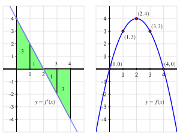

How can we find the exact value of a definite integral without taking the limit of a Riemann sum?
What is the statement of the Fundamental Theorem of Calculus, and how do antiderivatives of functions play a key role in applying the theorem?
What is the meaning of the definite integral of a rate of change in contexts other than when the rate of change represents velocity?
Much of our work in Chapter 4 has been motivated by the velocity-distance problem: if we know the instantaneous velocity function, \(v(t)\text{,}\) for a moving object on a given time interval \([a,b]\text{,}\) can we determine the distance it traveled on \([a,b]\text{?}\) If the velocity function is nonnegative on \([a,b]\text{,}\) the area bounded by \(y = v(t)\) and the \(t\)-axis on \([a,b]\) is equal to the distance traveled. This area is also the value of the definite integral \(\int_a^b v(t) \, dt\text{.}\) If the velocity is sometimes negative, the total area bounded by the velocity function still tells us distance traveled, while the net signed area tells us the object’s change in position (displacement).
For instance, for the velocity function in Figure 4.5.1, the total distance \(D\) traveled by the moving object on \([a,b]\) is
\begin{equation*}
D = A_1 + A_2 + A_3\text{,}
\end{equation*}
The areas \(A_1\text{,}\)\(A_2\text{,}\) and \(A_3\) are each given by definite integrals, which may be computed by limits of Riemann sums (and in special circumstances by geometric formulas).
Figure4.5.1.A velocity function that is sometimes negative.
We turn our attention to an alternate approach.
Warm-Up4.5.1.
A student with a third floor dormitory window 32 feet off the ground tosses a water balloon straight up in the air with an initial velocity of 16 feet per second. It turns out that the instantaneous velocity of the water balloon is given by \(v(t) = -32t + 16\text{,}\) where \(v\) is measured in feet per second and \(t\) is measured in seconds.
Let \(s(t)\) represent the height of the water balloon above ground at time \(t\text{,}\) and note that \(s\) is an antiderivative of \(v\text{.}\) That is, \(v\) is the derivative of \(s\text{:}\)\(s'(t) = v(t)\text{.}\) Find a formula for \(s(t)\) that satisfies the initial condition that the balloon is tossed from 32 feet above ground. In other words, make your formula for \(s\) satisfy \(s(0) = 32\text{.}\)
When does the water balloon reach its maximum height? When does it land?
Compute \(s(\frac{1}{2}) - s(0)\text{,}\)\(s(2) - s(\frac{1}{2})\text{,}\) and \(s(2) - s(0)\text{.}\) What do these represent?
What is the total vertical distance traveled by the water balloon from the time it is tossed until the time it lands?
Sketch a graph of the velocity function \(y = v(t)\) on the time interval \([0,2]\text{.}\) What is the total net signed area bounded by \(y = v(t)\) and the \(t\)-axis on \([0,2]\text{?}\) Answer this question in two ways: first by using your work above, and then by using a familiar geometric formula to compute areas of certain relevant regions.
Subsection4.5.1The Fundamental Theorem of Calculus
Suppose we know the position function \(s(t)\) and the velocity function \(v(t)\) of an object moving in a straight line, and for the moment let us assume that \(v(t)\) is positive on \([a,b]\text{.}\) Then, as shown in Figure 4.5.2, we know two different ways to compute the distance, \(D\text{,}\) the object travels: one is that \(D = s(b) - s(a)\text{,}\) the object’s change in position. The other is the area under the velocity curve, which is given by the definite integral, so \(D = \int_a^b v(t) \, dt\text{.}\)
Figure4.5.2.Finding distance traveled when we know a velocity function \(v\text{.}\)
Since both of these expressions tell us the distance traveled, it follows that they are equal, so
Equation (4.5.1) holds even when velocity is sometimes negative, because \(s(b) - s(a)\text{,}\)the object’s change in position, is also measured by the net signed area on \([a,b]\) which is given by \(\int_a^b v(t) \, dt\text{.}\)
Perhaps the most powerful fact Equation (4.5.1) reveals is that we can compute the integral’s value if we can find a formula for \(s\text{.}\) Remember, \(s\) and \(v\) are related by the fact that \(v\) is the derivative of \(s\text{,}\) or equivalently that \(s\) is an antiderivative of \(v\text{.}\)
Example4.5.3.
Determine the exact distance traveled on \([1,5]\) by an object with velocity function \(v(t) = 3t^2 + 40\) feet per second. The distance traveled on the interval \([1,5]\) is given by
where \(s\) is an antiderivative of \(v\text{.}\) Now, the derivative of \(t^3\) is \(3t^2\) and the derivative of \(40t\) is \(40\text{,}\) so it follows that \(s(t) = t^3 + 40t\) is an antiderivative of \(v\text{.}\) Therefore,
Note the key lesson of Example 4.5.3: to find the distance traveled, we need to compute the area under a curve, which is given by the definite integral. But to evaluate the integral, we can find an antiderivative, \(s\text{,}\) of the velocity function, and then compute the total change in \(s\) on the interval. In particular, we can evaluate the integral without computing the limit of a Riemann sum.
Figure4.5.4.The exact area of the region enclosed by \(v(t) = 3t^2 + 40\) on \([1,5]\text{.}\)
It will be convenient to have a shorthand symbol for a function’s antiderivative. For a continuous function \(f\text{,}\) we will often denote an antiderivative of \(f\) by \(F\text{,}\) so that \(F'(x) = f(x)\) for all relevant \(x\text{.}\) Using the notation \(V\) in place of \(s\) (so that \(V\) is an antiderivative of \(v\)) in Equation (4.5.1), we can write
Now, to evaluate the definite integral \(\int_a^b f(x) \, dx\) for an arbitrary continuous function \(f\text{,}\) we could certainly think of \(f\) as representing the velocity of some moving object, and \(x\) as the variable that represents time. But Equations (4.5.1) and (4.5.2) hold for any continuous velocity function, even when \(v\) is sometimes negative. So Equation (4.5.2) offers a shortcut route to evaluating any definite integral, provided that we can find an antiderivative of the integrand. The Fundamental Theorem of Calculus (FTC) summarizes these observations.
Fundamental Theorem of Calculus.
If \(f\) is a continuous function on \([a,b]\text{,}\) and \(F\) is any antiderivative of \(f\text{,}\) then \(\int_a^b f(x) \, dx = F(b) - F(a)\text{.}\)
A common alternate notation for \(F(b) - F(a)\) is
The FTC opens the door to evaluating a wide range of integrals if we can find an antiderivative \(F\) for the integrand \(f\text{.}\) For instance since \(\frac{d}{dx}[\frac{1}{3}x^3] = x^2\text{,}\) the FTC tells us that
But finding an antiderivative can be far from simple; it is often difficult or even impossible. While we can differentiate just about any function, even some relatively simple functions don’t have an elementary antiderivative. A significant portion of integral calculus (which is often the main focus of second semester college calculus) is devoted to the problem of finding antiderivatives.
Activity4.5.2.
Use the Fundamental Theorem of Calculus to evaluate each of the following integrals exactly. For each, sketch a graph of the integrand on the relevant interval and write one sentence that explains the meaning of the value of the integral in terms of the (net signed) area bounded by the curve.
Subsection4.5.2Evaluating Definite Integrals via \(u\)-substitution
In Subsection 4.2.2 we introduced \(u\)-substitution as a means to evaluate indefinite integrals of functions that can be written, up to a constant multiple, in the form \(f(g(x))g'(x)\text{.}\) This same technique can be used to evaluate definite integrals involving such functions, though we need to be careful with the corresponding limits of integration. Consider, for instance, the definite integral
Whenever we write a definite integral, it is implicit that the limits of integration correspond to the variable of integration. To be more explicit, observe that
When we execute a \(u\)-substitution, we change the variable of integration; it is essential to note that this also changes the limits of integration. For instance, with the substitution \(u = x^2\) and \(du = 2x \, dx\text{,}\) it also follows that when \(x = 2\text{,}\)\(u = 2^2 = 4\text{,}\) and when \(x = 5\text{,}\)\(u = 5^2 = 25\text{.}\) Thus, under the change of variables of \(u\)-substitution, we now have
Alternatively, we could consider the related indefinite integral \(\int xe^{x^2} \, dx\text{,}\) find the antiderivative \(\frac{1}{2}e^{x^2}\) through \(u\)-substitution, and then evaluate the original definite integral. With that method, we’d have
Let us review three interpretations of the definite integral.
For a moving object with instantaneous velocity \(v(t)\text{,}\) the object’s change in position on the time interval \([a,b]\) is given by \(\int_a^b v(t) \, dt\text{,}\) and whenever \(v(t) \ge 0\) on \([a,b]\text{,}\)\(\int_a^b v(t) \, dt\) tells us the total distance traveled by the object on \([a,b]\text{.}\)
For any continuous function \(f\text{,}\) its definite integral \(\int_a^b f(x) \, dx\) represents the net signed area bounded by \(y = f(x)\) and the \(x\)-axis on \([a,b]\text{,}\) where regions that lie below the \(x\)-axis have a minus sign associated with their area.
The value of a definite integral is linked to the average value of a function: for a continuous function \(f\) on \([a,b]\text{,}\) its average value \(f_{\operatorname{AVG} [a,b]}\) is given by
The Fundamental Theorem of Calculus now enables us to evaluate exactly (without taking a limit of Riemann sums) any definite integral for which we are able to find an antiderivative of the integrand.
A slight change in perspective allows us to gain even more insight into the meaning of the definite integral. Recall Equation (4.5.2), where we wrote the Fundamental Theorem of Calculus for a velocity function \(v\) with antiderivative \(V\) as
If we instead replace \(V\) with \(s\) (which represents position) and replace \(v\) with \(s'\) (since velocity is the derivative of position), Equation (4.5.2) then reads as
In words, this version of the FTC tells us that the total change in an object’s position function on a particular interval is given by the definite integral of the position function’s derivative over that interval.
Of course, this result is not limited to only the setting of position and velocity. Writing the result in terms of a more general function \(f\text{,}\) we have the Total Change Theorem, which is a useful interpretation for gaining insight about a general pure-time differential equation.
Total Change Theorem.
If \(f\) is a continuously differentiable function on \([a,b]\) with derivative \(f'\text{,}\) then \(f(b) - f(a) = \int_a^b f'(x) \, dx\text{.}\) That is, the definite integral of the rate of change of a function on \([a,b]\) is the total change of the function itself on \([a,b]\text{.}\)
The Total Change Theorem tells us more about the relationship between the graph of a function and that of its derivative. Recall that heights on the graph of the derivative function are equal to slopes on the graph of the function itself. If instead we know \(f'\) and are seeking information about \(f\text{,}\) as is the case when modeling using differential equations, we can say the following:
differences in heights on \(f\) correspond to net signed areas bounded by \(f'\text{.}\)

Figure4.5.5.The graphs of \(f'(x) = 4 - 2x\) (at left) and an antiderivative \(f(x) = 4x - x^2\) at right. Differences in heights on \(f\) correspond to net signed areas bounded by \(f'\text{.}\)
To see why this is so, consider the difference \(f(1) - f(0)\text{.}\) This value is 3, because \(f(1) = 3\) and \(f(0) = 0\text{,}\) but also because the net signed area bounded by \(y = f'(x)\) on \([0,1]\) is 3. That is,
In addition to this observation about area, the Total Change Theorem enables us to answer questions about a function whose rate of change we know.
Example4.5.6.
Suppose that pollutants are leaking out of an underground storage tank at a rate of \(r(t)\) gallons/day, where \(t\) is measured in days. It is conjectured that \(r(t)\) is given by the formula \(r(t) = 0.0069t^3 -0.125t^2+11.079\) over a certain 12-day period. The graph of \(y=r(t)\) is given in Figure 4.5.7. What is the meaning of \(\int_4^{10} r(t) \, dt\) and what is its value? What is the average rate at which pollutants are leaving the tank on the time interval \(4 \le t \le 10\text{?}\)
Figure4.5.7.The rate \(r(t)\) of pollution leaking from a tank, measured in gallons per day.
Solution.
Since \(r(t) \ge 0\text{,}\) the value of \(\int_4^{10} r(t) \, dt\) is the area under the curve on the interval \([4,10]\text{.}\) A Riemann sum for this area will have rectangles with heights measured in gallons per day and widths measured in days, so the area of each rectangle will have units of
Thus, the definite integral tells us the total number of gallons of pollutant that leak from the tank from day 4 to day 10. The Total Change Theorem tells us the same thing: if we let \(R(t)\) denote the total number of gallons of pollutant that have leaked from the tank up to day \(t\text{,}\) then \(R'(t) = r(t)\text{,}\) and
the number of gallons that have leaked from day 4 to day 10.
To compute the exact value of the integral, we use the Fundamental Theorem of Calculus. Antidifferentiating \(r(t) = 0.0069t^3 -0.125t^2+11.079\text{,}\) we find that
Thus, approximately 44.282 gallons of pollutant leaked over the six day time period.
To find the average rate at which pollutant leaked from the tank over \(4 \le t \le 10\text{,}\) we compute the average value of \(r\) on \([4,10]\text{.}\) Thus,
During a 40-minute workout, a person riding an exercise machine burns calories at a rate of \(c\) calories per minute, where the function \(y = c(t)\) is given in Figure 4.5.8. On the interval \(0 \le t \le 10\text{,}\) the formula for \(c\) is \(c(t) = -0.05t^2 + t + 10\text{,}\) while on \(30 \le t \le 40\text{,}\) its formula is \(c(t) = -0.05t^2 + 3t - 30\text{.}\)
Figure4.5.8.The rate \(c(t)\) at which a person exercising burns calories, measured in calories per minute.
What is the exact total number of calories the person burns during the first 10 minutes of her workout?
Let \(C(t)\) be an antiderivative of \(c(t)\text{.}\) What is the meaning of \(C(40) - C(0)\) in the context of the person exercising? Include units on your answer.
Determine the exact average rate at which the person burned calories during the 40-minute workout.
At what time(s), if any, is the instantaneous rate at which the person is burning calories equal to the average rate at which she burns calories, on the time interval \(0 \le t \le 40\text{?}\)
Subsection4.5.4Summary
Question4.5.9.
How can we find the exact value of a definite integral without taking the limit of a Riemann sum?
Answer.
We can find the exact value of a definite integral without taking the limit of a Riemann sum or using a familiar area formula by finding the antiderivative of the integrand, and then applying the Fundamental Theorem of Calculus.
Question4.5.10.
What is the statement of the Fundamental Theorem of Calculus, and how do antiderivatives of functions play a key role in applying the theorem?
Answer.
The Fundamental Theorem of Calculus says that if \(f\) is a continuous function on \([a,b]\) and \(F\) is an antiderivative of \(f\text{,}\) then
Hence, if we can find an antiderivative for the integrand \(f\text{,}\) evaluating the definite integral comes from simply computing the change in \(F\) on \([a,b]\text{.}\)
Question4.5.11.
What is the meaning of the definite integral of a rate of change in contexts other than when the rate of change represents velocity?
Answer.
A slightly different perspective on the FTC allows us to restate it as the Total Change Theorem, which says that
for any continuously differentiable function \(f\text{.}\) This means that the definite integral of the instantaneous rate of change of a function \(f\) on an interval \([a,b]\) is equal to the total change in the function \(f\) on \([a,b]\text{.}\)
Exercises4.5.5Exercises
1.
The instantaneous velocity (in meters per minute) of a moving object is given by the function \(v\) as pictured in Figure 4.5.12. Assume that on the interval \(0 \le t \le 4\text{,}\)\(v(t)\) is given by \(v(t) = -\frac{1}{4}t^3 + \frac{3}{2}t^2 + 1\text{,}\) and that on every other interval \(v\) is piecewise linear, as shown.
Figure4.5.12.The velocity function of a moving body.
Determine the exact distance traveled by the object on the time interval \(0 \le t \le 4\text{.}\)
What is the object’s average velocity on \([12,24]\text{?}\)
At what time is the object’s acceleration greatest?
Suppose that the velocity of the object is increased by a constant value \(c\) for all values of \(t\text{.}\) What value of \(c\) will make the object’s total distance traveled on \([12,24]\) be 210 meters?
2.
When an aircraft attempts to climb as rapidly as possible, its climb rate (in feet per minute) decreases as altitude increases, because the air is less dense at higher altitudes. Given below is a table showing performance data for a certain single engine aircraft, giving its climb rate at various altitudes, where \(c(h)\) denotes the climb rate of the airplane at an altitude \(h\text{.}\)
\(h\) (feet)
\(0\)
\(1000\)
\(2000\)
\(3000\)
\(4000\)
\(5000\)
\(6000\)
\(7000\)
\(8000\)
\(9000\)
\(10{,}000\)
\(c\) (ft/min)
\(925\)
\(875\)
\(830\)
\(780\)
\(730\)
\(685\)
\(635\)
\(585\)
\(535\)
\(490\)
\(440\)
Let a new function called \(m(h)\) measure the number of minutes required for a plane at altitude \(h\) to climb the next foot of altitude.
Determine a similar table of values for \(m(h)\) and explain how it is related to the table above. Be sure to explain the units.
Give a careful interpretation of a function whose derivative is \(m(h)\text{.}\) Describe what the input is and what the output is. Also, explain intuitively what the function tells us.
Determine a definite integral whose value tells us exactly the number of minutes required for the airplane to ascend to 10,000 feet of altitude. Clearly explain why the value of this integral has the required meaning.
Use the Riemann sum \(M_5\) to estimate the value of the integral you found in (c). Include units on your result.
3.
In Chapter 1, we discussed that for an object moving along a straight line with position function \(s(t)\text{,}\) the object’s “average rate of change on the interval \([a,b]\)” is given by
As we know, the rate of change of position describes velocity, so we may also say this is the object’s “average velocity on the interval \([a,b]\)”.
More recently in Chapter 4, we found that for an object moving along a straight line with velocity function \(v(t)\text{,}\) the object’s “average value of its velocity function on \([a,b]\)” is
Are the “average velocity on the interval \([a,b]\)” and the “average value of the velocity function on \([a,b]\)” the same thing? Why or why not? Explain.